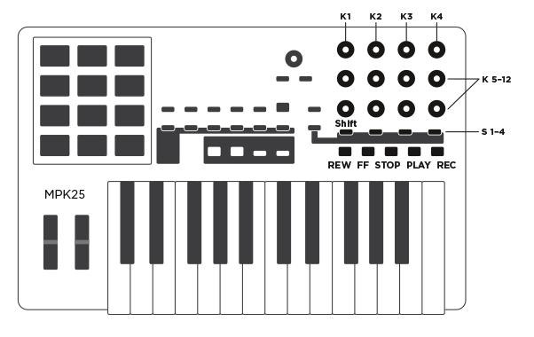

Important note: For the script to work, you need to load the
Bitwig
Studio preset into the MPK25 using the Akai editor.
|
GLOBAL |
| K 1 |
Volume of selected track. |
| K 2 |
Pan of selected track. |
| K 3 |
Send 1 of selected track. |
| K 4 |
Send 2 of selected track. |
| S 1 |
Shift Button |
|
GLOBAL |
| REW (+shift) |
Transport Rewind (select previous track). |
| FF (+shift) |
Transport Fast Forward (select next track). |
| STOP (+shift) |
Transport Stop (abort automation override). |
| Play (+shift) |
Transport Play (global Back to Arrangement). |
| REC (+shift) |
Transport Record (arm selected track). |
|
BANK A |
| K5 - 12 |
Macros of 1st instrument device of selected track. |
| S2 (+shift) |
Next (previous) preset. |
| S3 (+shift) |
Next (previous) preset category. |
| S4 (+shift) |
Next (previous) preset creator. |
|
BANK B |
| K5 - 12 |
Parameters of selected device. |
| S2 (+shift) |
Next (previous) parameter page. |
| S3 (+shift) |
Select next (previous) device. |
| S4 (+shift) |
Toggle solo (mute). |